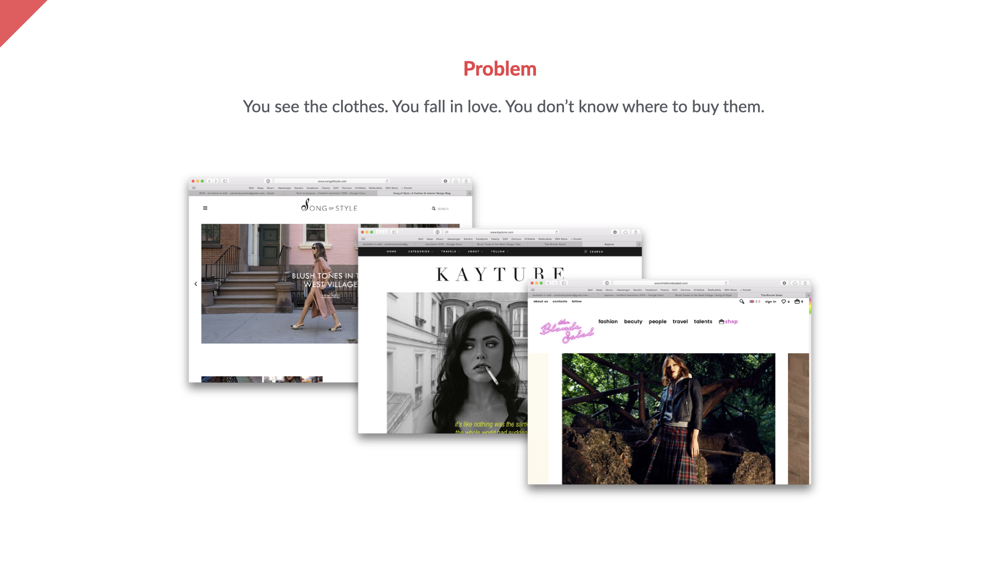
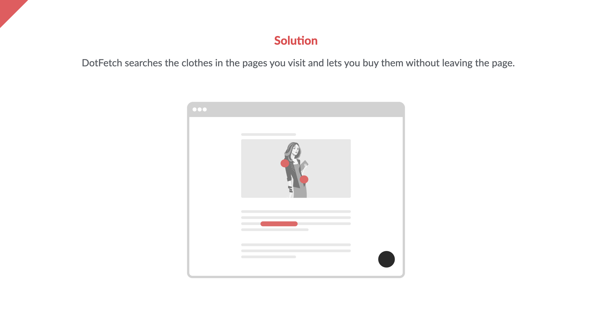

Awarded 3rd place in the 2016 Farfetch Hackathon.
DotFetch is a prototype developed at the very first external hackathon organised by Farfetch. It was held in a built for purpose structure in downtown Porto, in 2016.
The goal was for teams to try and come up with potential new sources of revenue for the business.
My team was comprised of friends from work:
Our objective was to make it easy for people to buy things they saw while browsing the web, closing the gap between the browsing and the shopping experience.
Our solution took shape into a browser extension that the user would open whenever they saw a piece of clothing and outfit that they liked and, through the magic of scraping the information on the page and a fairly advanced image recognition system (for the time), would return the same or similar items on the Farfetch storefront that could immediately add to their cart and purchase — all without having to navigate to a different page.
See the pitch deck below:
 Video
The prototype we built during the 24 hours we had managed to impress the judges and we were awarded 3rd place out of 36 teams.